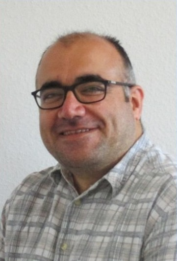

Matematik Öğretmeni & IT Uzmanı
İş Deneyimi
07/2016 - 10/2020 - Akıllı Telefon Satış ve Tamir İşletmesi
- Konum: İstanbul / Türkiye
- Durum: Kendi işletmesi
- Faaliyetler:
- Akıllı Telefon Yazılım Tamiri: Hem yerinde hem de uzaktan destek ile akıllı telefonlar için yazılım tamirleri
- Satış Web Siteleri: Birden fazla satış web sitesinin oluşturulması ve yönetimi
- Bilgisayar Programları Geliştirme: Akıllı telefon tamir ve yönetimi için araçların programlanması
- Müşteri Danışmanlığı ve Teknik Destek: Müşteriler için danışmanlık ve teknik destek hizmetleri
11/2011 - 06/2016 - Matematik Öğretmeni (Gymnasium)
- Okullar:
- İstanbul Merter Fatih Koleji, Türkiye
- İstanbul Başakşehir Fatih, Türkiye
- Seviye: Gymnasium seviyesi matematik öğretimi
- Özel Proje: Bilgisayar destekli matematik öğretimi: Dijital araçların matematik öğretimine entegrasyonu için seminerler
Teknik Projeler
Web Geliştirme Projeleri
- E-ticaret Web Siteleri: Akıllı telefon satışı için birden fazla web sitesi geliştirme
- Teknoloji: PHP, CSS, SQL kullanarak dinamik web siteleri
Yazılım Geliştirme Projeleri
- Akıllı Telefon Yönetim Araçları: Tamir ve yönetim süreçlerini kolaylaştıran özel yazılımlar
- Programlama Dilleri: C#, C++, Java, Python kullanarak çeşitli araçlar
Yetenekler ve Uzmanlık Alanları
- Yazılım Geliştirme: Web uygulamaları, masaüstü uygulamaları
- Donanım Tamiri: Bilgisayar ve akıllı telefon tamiri
- Eğitim Teknolojisi: Dijital araçların eğitime entegrasyonu
- Video Düzenleme: Adobe Premiere ve CapCut ile video prodüksiyon